微操作命令分析 链接到标题
取指周期 链接到标题
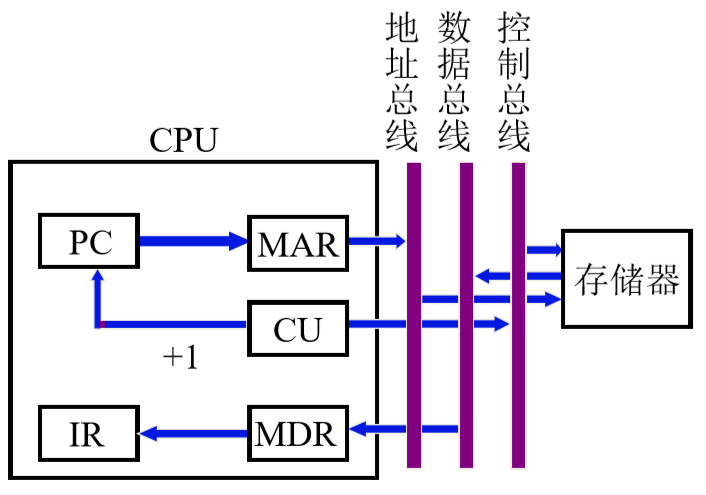
- PC->MAR-> 地址线
- 1->R(读操作允许信号置为 1)
- M(MAR)->MDR(M 表示 MAR 内的地址所在的内存单元的值)
- MDR->IR
- OP(IR)->CU,(OP 代表 IR 中保存的命令的操作码)
- (PC)+1->PC,(括号加 PC，代表取 PC 的值)
指令的地址保存在 PC 中，PC 将地址送入 MAR 经过地址总线送入存储器中，然后 CU 向存储器发出读信号，该信号经过控制总线送入存储器中，读出的数据从由存储器送给 MDR，再由 MDR 送入 IR，指令就被取出到 IR 当中。
在取指周期其实还要完成译码的任务，译码要确定指令要做什么操作，这个操作由指令的操作码给出，所以要将指令的操作码部分送给 CU，然后再由 CU 译码确定指令的操作。取指周期还要对 PC 进行更新，所以 PC 的值要 +1，把结果再保存进 PC 当中。
间址周期 链接到标题
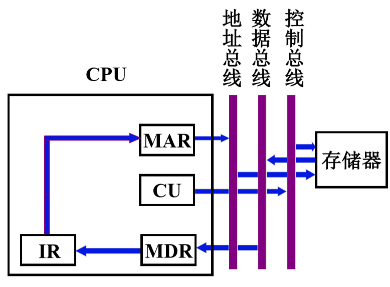
- 指令形式地址->MAR
- Ad(IR)->MAR
- 1->R(发出读信号)
- M(MAR)->MDR(MAR 保存的地址所在内存单元中的数据 M 送入 MDR)
- MDR->Ad(IR)(真实地址送入 IR)
间址周期说明指令采用的是间接寻址，我们要通过间址周期把操作数的地址，从存储器当中取出，放入 IR 当中所保存的指令的地址码部分。
指令所在的地址由 IR 给出，首先将形式地址传送给 MAR，也就是 IR 中的地址码部分给 MAR，再由 MAR 经过地址总线传给存储器，要实现这个操作需要由 CU 控制，发出“将 IR 的地址码部分送入 MAR”的控制信号，也就是 IR 中的操作码部分进行译码，然后控制器向存储器发出读信号，存储器接收到控制信号后，将指定的内存单元的数据取出，然后通过数据总线，将数据传送给 MDR，被取出的数据也是一个地址，所以送入 IR 中的地址码部分，此时 IR 中的地址码部分就是操作数的真实地址。
执行周期 链接到标题
在取指周期和间址周期，我们假设指令字长=机器字长=存储字长，执行周期由于各指令长短不一，相对比较复杂。
非访存指令 链接到标题
- CLA，对 ACC 进行清零，控制器将 0 送入 ACC
- COM，取反，将 ACC 中的内容按位取反。
- SHR，算术右移，数据右移后左边会空出一位，原来是数据的符号位，这一位只要用原来的符号位进行填充就可以，这条命令包含两个操作，L(ACC)->R(ACC)，将 ACC 左边的内容，写入 ACC 的右侧，ACC0->ACC0,最高位重新写回 ACC，这两条操作可以同时进行。
- CSL，循环左移，R(ACC)->L(ACC),ACC0->ACCn
- STP，停机指令，0->G
访存指令 链接到标题
-
加法指令，ADD X
- Ad(IR)->MAR (ACC 以及保存了被加数，需要取出加数)
- 1->R(读命令)
- M(MAR)->MDR
- (ACC)+(MDR)->ACC(相加后存入 ACC)
-
存数指令，STA X
- Ad(IR)->MAR
- 1->w(写命令)
- ACC->MDR
- MDR->M(MAR)(MDR 的内容存储到 MAR 指令的单元)
-
取数指令，LDA X
- Ad(IR)->MAR
- 1->R
- M(MAR)->MDR
- MDR->ACC(取出数据存入 ACC 寄存器)
转移指令 链接到标题
- 无条件转移，JMP X，Ad(IR)->PC
- 条件转移，BAN X(上次计算的结果值如果为负，则转移)
三类指令的指令周期 链接到标题
- 非访存指令周期: 取指周期、执行周期
- 直接访存指令周期: 取指周期、执行周期
- 间接访存指令周期: 取指周期、间址周期、执行周期
- 转移指令周期: 取指周期、执行周期
- 间接转移指令周期: 取指周期、间址周期、执行周期
中断周期 链接到标题
保存断点分为两种方式，程序断点存入”0”地址，或者程序断点进栈。
0 地址 链接到标题
- 0->MAR(0 的地址送入 MAR)
- 1->W(发送写命令)
- PC->MDR(断点保存在 PC 中，所以将 PC 的内容送入 MDR)
- MDR->M(MAR)(写入操作，完成了保存断点操作)
- 向量地址->PC(硬件向量法)
- 0->EINT(中断允许触发器,关中断)
程序断点进栈 链接到标题
- (SP)-1->MAR(要将程序断点写入新的栈顶地址)
- 1->W
- PC->MDR
- MDR->M(MAR)
- 中断识别程序入口地址 M->PC(软件查询法)
- 0->EINT(置”0”)
控制单元的功能 链接到标题
控制单元的外特性 链接到标题
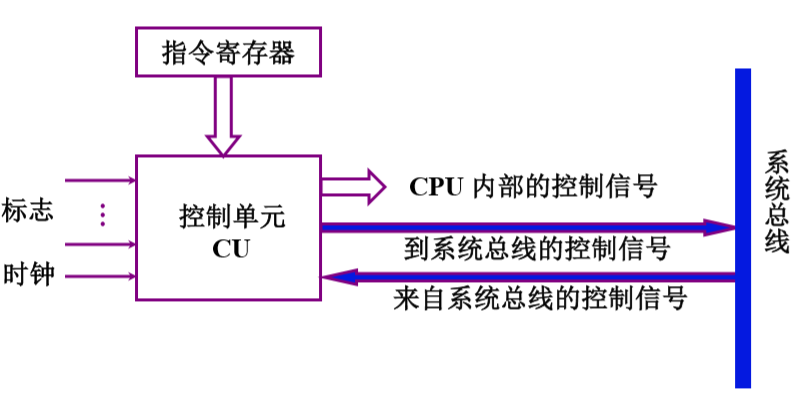
输入信号包括来自指令寄存器的操作码部分，CU 要对操作码进行译码，CU 在时钟信号的控制之下进行工作，还要各种标志，这些标志是指令执行的必要条件，通过系统总线 CPU 外部的信号可以进入 CU。
控制单元的输出信号包括两部分，一个是 CPU 内部的控制信号，另一个是到系统总线的控制信号。
输入信号 链接到标题
- 时钟，CU 受时钟控制，一个时钟脉冲可以发一个操作命令或一组需同时执行的操作命令。
- 指令寄存器，OP(IR)->CU，控制信号与操作码有关
- 标志，CU 受标志控制
- 外来信号，如 INTR 中断请求、HRQ 总线请求
输出信号 链接到标题
-
CPU 内的各种控制信号
- Ri->Rj(寄存器之间进行数据传输)
- (PC)+1->PC(对指令地址进行修改)
- 数据运算和逻辑运算
- ALU 的控制信号也由 CU 发出
-
送至控制总线的信号
- MREQ，访存控制信号
- IO/M，访 IO/存储器的控制信号
- RD，读命令
- WR，写命令
- INTA，中断响应信号
- HLDA，总线响应信号
控制信号举例 链接到标题
不采用 CPU 内部总线的方式 链接到标题
取指周期 链接到标题
PC,指出了下一条指令的地址，将指令取到送入 IR 中，然后送入 CU 当中译码，CU 要有时钟信号控制，还有寄存器 AC、运算器 ALU、MDR、MAR。
取指令 PC 送入 MAR，MAR 将地址送入内存，取出的指令送入 MDR，如果取回的是指令，需要送入 AC 当中，如果是加法指令取回的是数据，需要放入 AC 寄存器，如果取回的是加法指令直接送入 ALU 进行运算，如果是间址寻址取到的是操作数的地址，需要将地址再送入 MAR，将操作数取回，IR 要将寄存器的操作码部分送入 CU，时钟要送入 CU 中，控制 CU 发送控制信号，CU 发出各种控制信号控制 ALU 完成运算，下图是加法指令为例：
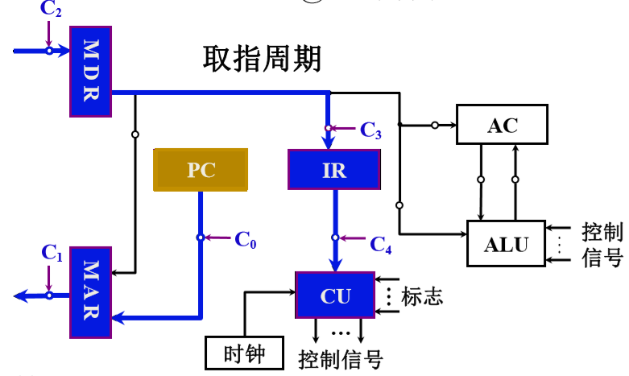
间址周期 链接到标题
同样以加法指令为例，但加法指令的数据部分并不是真实地址，下面假设从 MDR 拿到形式地址。IR 的蓝色部分表示操作数，棕色部分表示地址码。
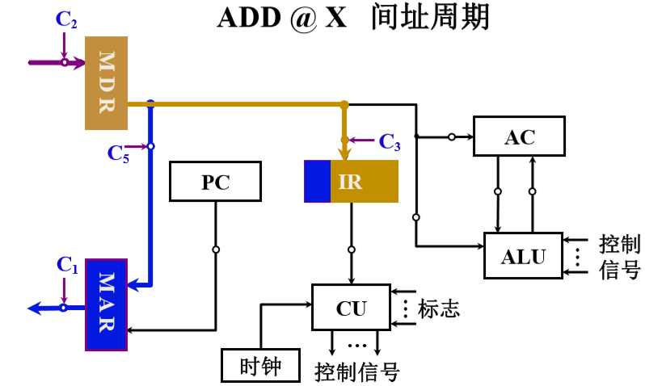
执行周期 链接到标题
由于上次的操作并没有对 MDR 清零，所以操作数的地址保存在 MDR 与 IR 中，假设取操作数地址来源于 MDR 中，MDR->MAR,MAR-> 内存，CU 发送读信号，读出的数据送入 MDR，此时 AC 存的被加数，MDR 存的加数，将 AC->ALU,MDR->ALU,在 CU 控制下完成运算操作，将结果存入 AC.
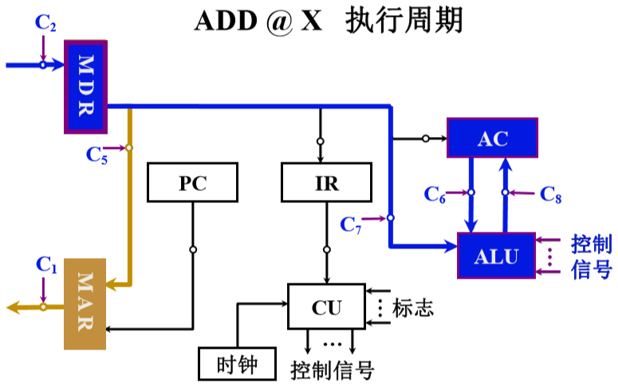
采用 CPU 内部总线的方式 链接到标题
取指周期 链接到标题
为了能够保存参加运算的两个操作数，和输出的运算结果，在这种 CPU 内部总线结构中，需要在 ALU 两个输入端加入两个寄存器，其中 AC 作为一个寄存器，还需要将加入一个 Y 寄存器，在 ALU 的输出端加入一个 Z 寄存器，保存运算的结果。
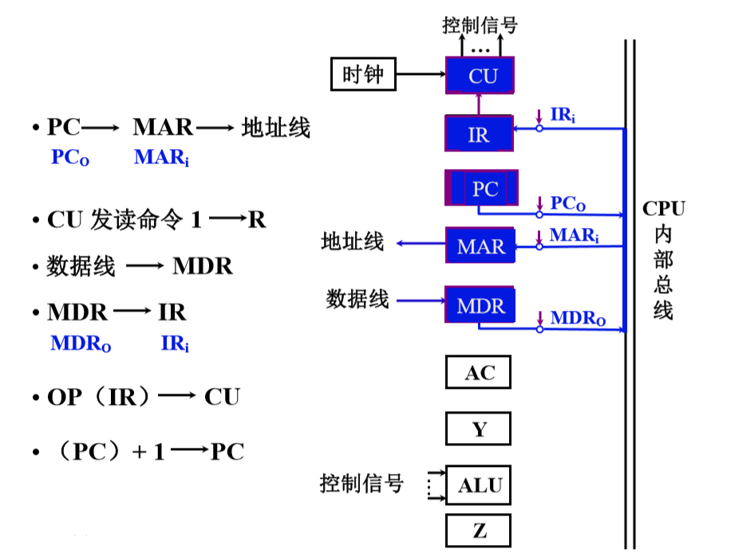
$PC_o$表示 PC 保存的值
间址周期 链接到标题
CPU 内部总线相当于结合了地址、数据以及控制总线，但操作逻辑上和之前不采用总线的 CPU 结构一样，这里不再叙述。
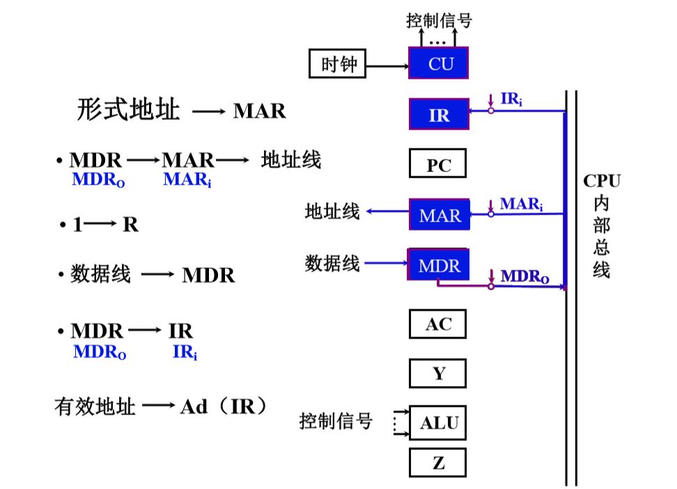
执行周期 链接到标题
值得注意的是 Y 用来保存加数，AC 保存被加数，结果由 ALU 运算后存入 Z 中。
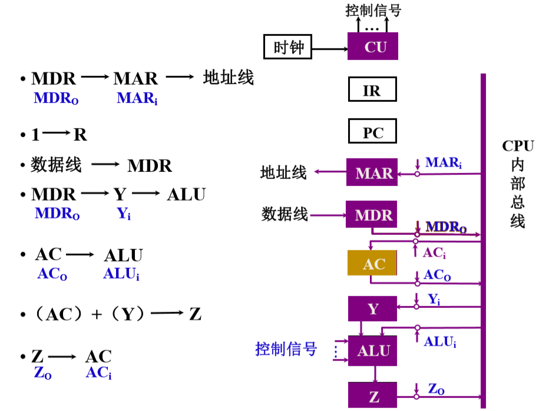
多级时序系统 链接到标题
机器周期 链接到标题
- 机器周期概念：所有指令执行过程中的一个基准时间
- 确定机器周期需考虑的因素：每条指令的执行步骤，每一步骤所需的时间
- 基准时间的确定：以完成最复杂指令功能的时间为准,一般最复杂的是访问存储器的指令，所以将访问一次存储器的时间为基准，若指令字长=存储子长，则取指周期=机器周期
时钟周期 链接到标题
一个机器周期内可完成若干个微操作，每个微操作需要一定的时间，因此将一个机器周期分为若干个时间相等的时间段(节拍、状态、时钟周期)。
时钟周期是控制计算机操作的最小单位时间，用时钟周期控制产生一个或几个微操作命令。
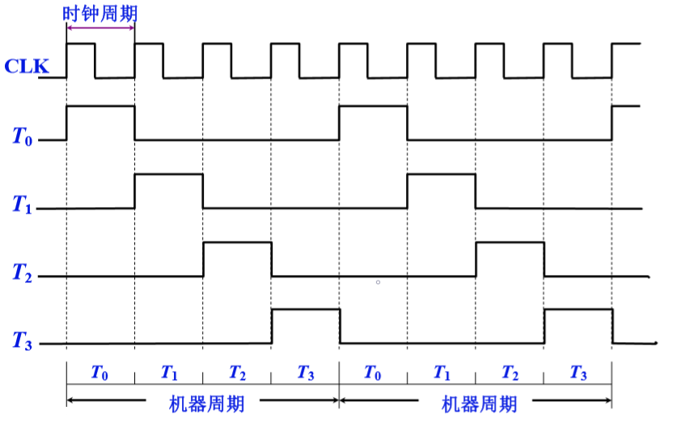
多级时序系统 链接到标题
机器周期、节拍(状态)组成多级时序系统
一个指令周期包含若干个时钟周期
一个机器周期包含若干个时钟周期
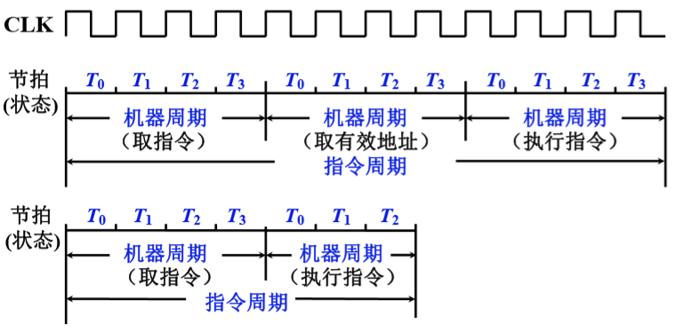
机器速度与机器主频的关系 链接到标题
在机器周期所含时钟周期数相同的前提下，两机平均指令执行速度之比等于两机主频之比
$$ MINPS_1/MINPS_2=f_1/F_2 $$
机器速度不仅与主频有关，还与机器周期中所含时钟周期(主频的倒数)数以及指令周期中所含的机器周期数有关.
控制方式 链接到标题
产生不同微操作命令序列所用的时序控制方式
同步控制方式 链接到标题
任一微操作均有统一基准时标的时序信号控制(定宽定距)。
- 可以采用定长的机器周期，以最长的微操作系列和最复杂的微操作作为标准，机器周期内的节拍数相同。
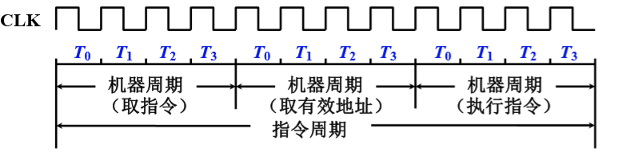
- 采用不定长的机器周期，机器周期内节拍数不等
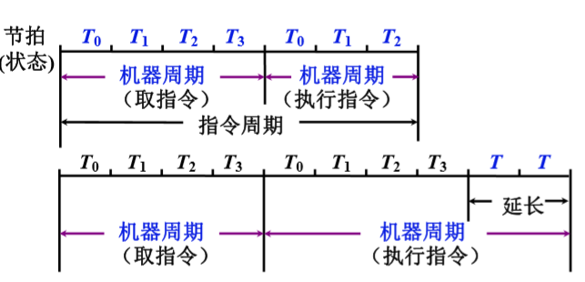
- 采用中央控制和局部控制相结合的方法
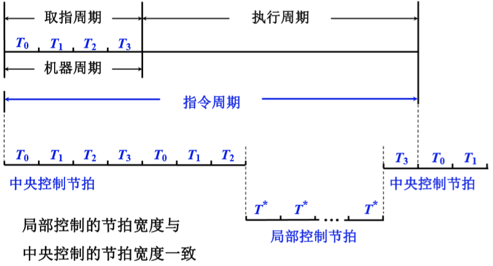
其他方式 链接到标题
-
异步控制方式
- 无基准时标信号
- 无固定的周期节拍和严格的时钟同步
- 采用应答方式
-
联合控制方式
- 同步与异步相结合
-
人工控制方式
- Reset
- 连续和单条指令执行转换开关
- 符合停机开关